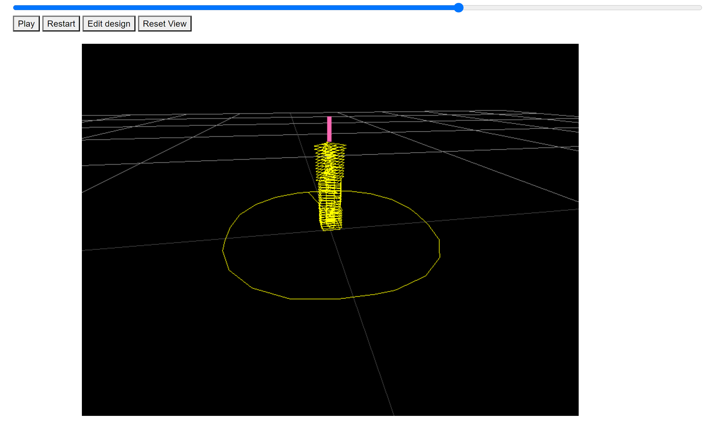
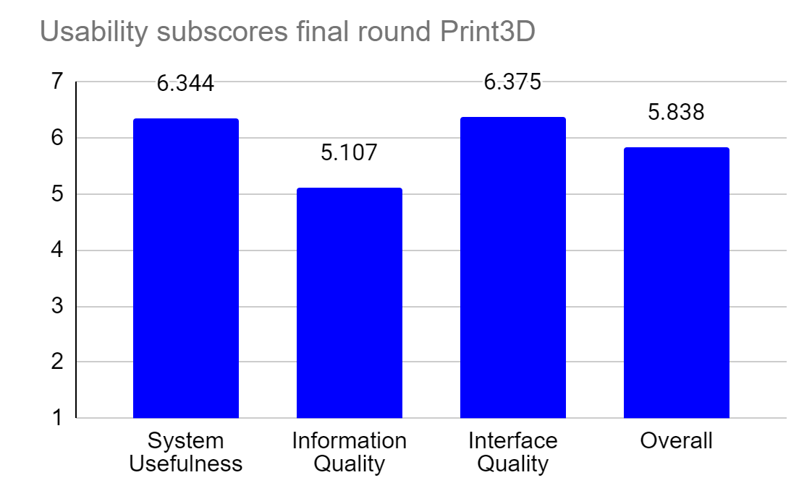
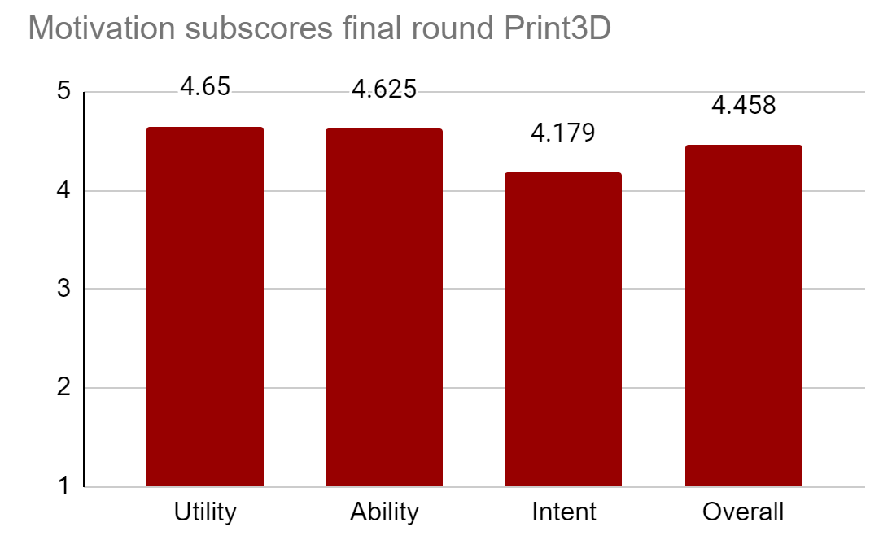

Introduction
3D printing is an exciting and innovative technology, and Educators
are becoming more aware of its potential in STEAM education.
The use of 3D printings in introductory programming to engage
and motivate students is a fairly new idea and has mainly been used for
blind and visually impaired students.
By bridging programming and 3D printing, students have the possibility
to explore emerging technologies like 3D printing,
which is a very promising and exciting technology for
both industry and education.
However, due to the COVID-19 pandemic, using a 3D
printer was substituted using a 3D printing simulation
It was argued that this is still has potential to be a
viable way to get students excited about programming, as it gives them
the thought that their skills and knowledge can produce tangible products,
as well as introduce them to the innovative world of 3D printing
System Design
This project focuses on the design component of the 3D printing workflow.
A 3D printer simulator was developed that allows users to interact with and view the virtual
printing of their own artefact.
The core Print3D application provides a simulation window and controls to control the simulation.
A 3D model is received in the form of a STL (Standard Tessellation Language) file,
a format native to CAD (Computer Aided Design) software. However, a 3D printer
needs an algorithm to move it’s tip and extrude filament
around a 3D space. Gcode is the language that specifies
these movements. An STL file can be ‘sliced’/converted
into a Gcode file via Slic3r, a slicing software. The Gcode is visualized with Three.js, a JavaScript
library used to create animated 3D computer graphics in
a web browser. Since a Gcode file is essentially a list of
3D points that a 3D printer follows, a program was developed in JavaScript, using Three.js, that controls the drawing of lines between these
points. This interface is shown below.

Results
The results indicate that educators consideration towards the 3D printing simulation as a motivating tool
to learning introductory programming was high from our motivation survey, with an overall score of 4.458
(max of 5). The results also indicate the educators level of agreement to the system being usable was high from our
usability survey, with an overall score of 5.838 (max of 7).
The distribution of scores can be seen below, for usability:

And motivation:

Below are some quotes from the qualitative component (all names have been changed):
Jeff
Teaching assistant
"I think this tool would be perfect for university students who want to get into 3D printing.
Python support would make it easier to get into at earlier stages of university.
"
Umar
Teaching assistant
"Overall, I really enjoyed using the system and felt motivated to experiment with new ideas for 3D Prints.
The immediate feedback loop is something I really appreciated and I feel like this really fits in with the
quick iteration philosophy of 3D printing."
Documents
Literature Review (pdf)
Final paper (pdf)